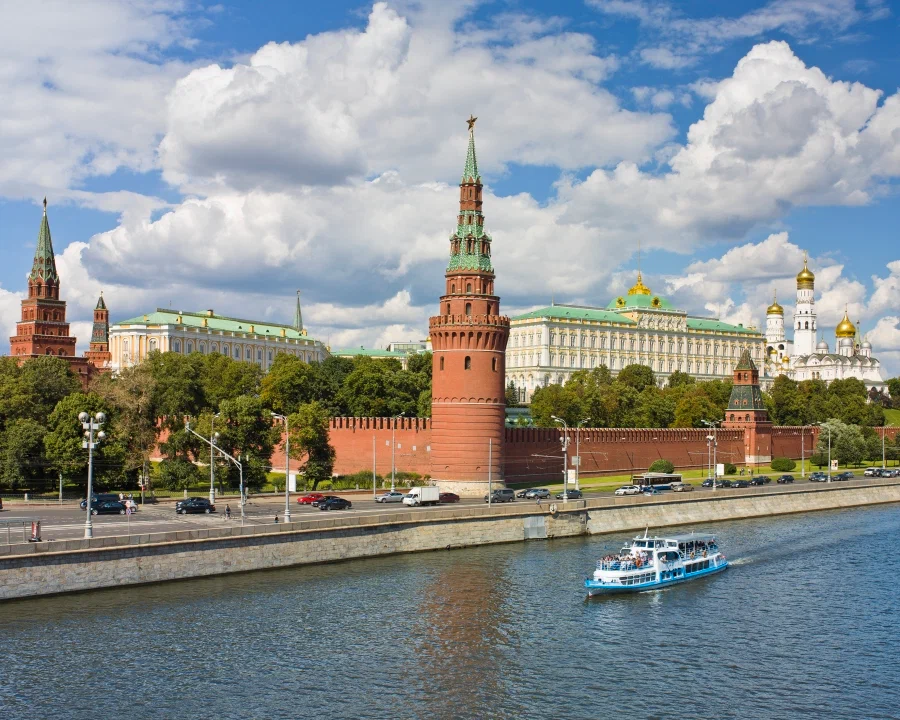
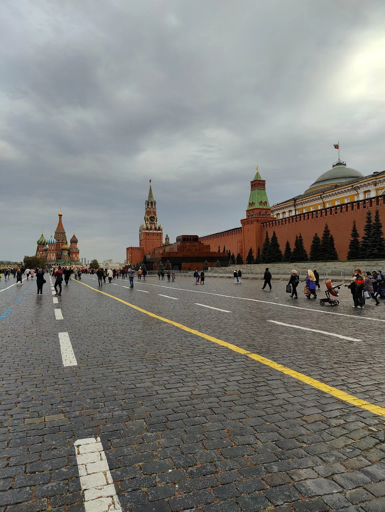
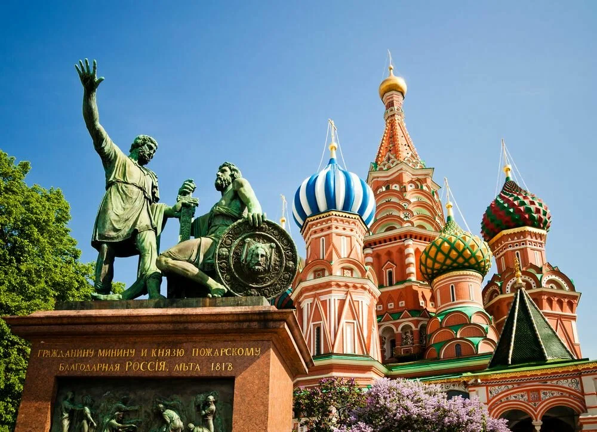

При Иване III началось масштабное строительство крепости на холме. Сейчас Кремль — это 20 башен, 28 гектаров земли и 2235 метров кремлёвской стены высотой до 19 метров и толщиной до 6,5 метров.Вход в Кремль — через Кутафью башню. Внутри крепости можно увидеть мощёные площади и уютные скверы, дворцы и храмы, которым не одно столетие.
Находится: Москва, Ивановская площадь На этой площади узнавали царские указы и городские новости, провожали и встречали воинов, по указу Петра I показывали образец украшения новогодней ёлки и «огненных праздничных утех», проводили крестные ходы и казни. Площадь появилась благодаря крупному пожару, уничтожившему постройки с этой стороны кремлёвской стены. Долго в народе так и говорили — на Пожаре, имея в виду на площади, где был тот самый пожар. Здесь торговали и нанимали попов для службы на дому. Название «Красная» она получила как статус главной площади Москвы, но такой красивой, как сейчас, стала значительно позже.
Находится: Москва, Красная площадь За пять веков собор перестраивался несколько раз. Потому в нём так много крылечек, башенок, разноуровневых церквей. Центральный шатровый купол собора — самый высокий из девяти. Он символизирует Покров Богородицы, который покрывает и оберегает Русскую землю. Своё неофициальное название по имени Василия Блаженного собор получил в конце XVI века. К собору пристроили придел, в который поместили мощи почитаемого царём Иваном Грозным и народом юродивого. Пристройку отапливали и молились здесь круглый год. Сам же собор работал только летом. Так по названию придела народ прозвал весь храм — собор Василия Блаженного.
Находится: Красная площадь, 7, Москва 